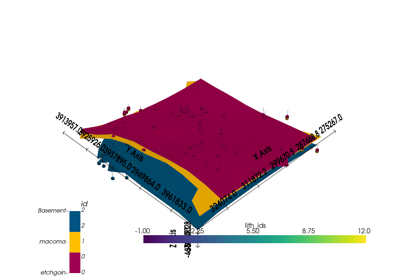

gempy.core.data.SurfacePointsTable¶
- class gempy.core.data.SurfacePointsTable(data: ndarray, name_id_map: dict[str, int] | None = None, _model_transform: Transform | None = None)[source]¶
A dataclass to represent a table of surface points in a geological model.
Examples using
gempy.core.data.SurfacePointsTable¶Unknown Model: Importing Borehole Data and Building a 3D Geological Model with GemPy
Unknown Model: Importing Borehole Data and Building a 3D Geological Model with GemPyMethods
__init__(data[, name_id_map, _model_transform])from_arrays(x, y, z, names[, nugget, ...])Create a SurfacePointsTable from arrays of coordinates and names.
Get a SurfacePointsTable containing points with the specified id.
Get a list of SurfacePointsTable objects, each containing points with a unique id.
Get a SurfacePointsTable containing points with the specified name.
id_to_name(id)Get the name corresponding to a given id.
Initialize an empty SurfacePointsTable.
Attributes
dfThe custom data type for the data array.
ididsmodel_transformA mapping between surface point names and ids.
nuggetxyzxyz_viewA structured NumPy array holding the X, Y, Z coordinates, id, and nugget of each surface point.
- data: ndarray¶
A structured NumPy array holding the X, Y, Z coordinates, id, and nugget of each surface point.
- name_id_map: dict[str, int] | None = None¶
A mapping between surface point names and ids.
- dt = dtype([('X', '<f8'), ('Y', '<f8'), ('Z', '<f8'), ('id', '<i4'), ('nugget', '<f8')])¶
The custom data type for the data array.
- classmethod from_arrays(x: ndarray, y: ndarray, z: ndarray, names: Sequence | str, nugget: ndarray | None = None, name_id_map: dict[str, int] | None = None) SurfacePointsTable[source]¶
Create a SurfacePointsTable from arrays of coordinates and names.
- Parameters:
x (np.ndarray) – Array of x-coordinates.
y (np.ndarray) – Array of y-coordinates.
z (np.ndarray) – Array of z-coordinates.
names (Union[Sequence, str]) – Names of the surface points.
nugget (Optional[np.ndarray]) – Nugget values for the surface points.
name_id_map (Optional[dict[str, int]]) – Mapping between surface point names and ids.
- Returns:
A new instance of SurfacePointsTable.
- Return type:
- classmethod initialize_empty() SurfacePointsTable[source]¶
Initialize an empty SurfacePointsTable.
- Returns:
An empty instance of SurfacePointsTable.
- Return type:
- id_to_name(id: int) str[source]¶
Get the name corresponding to a given id.
- Parameters:
id (int) – The id of the surface point.
- Returns:
The name of the surface point.
- Return type:
str
- get_surface_points_by_name(name: str) SurfacePointsTable[source]¶
Get a SurfacePointsTable containing points with the specified name.
- Parameters:
name (str) – The name of the surface points.
- Returns:
A new instance containing the specified surface points.
- Return type:
- get_surface_points_by_id(id: int) SurfacePointsTable[source]¶
Get a SurfacePointsTable containing points with the specified id.
- Parameters:
id (int) – The id of the surface points.
- Returns:
A new instance containing the specified surface points.
- Return type:
- get_surface_points_by_id_groups() list[SurfacePointsTable][source]¶
Get a list of SurfacePointsTable objects, each containing points with a unique id.
- Returns:
A list of SurfacePointsTable objects.
- Return type:
list[SurfacePointsTable]